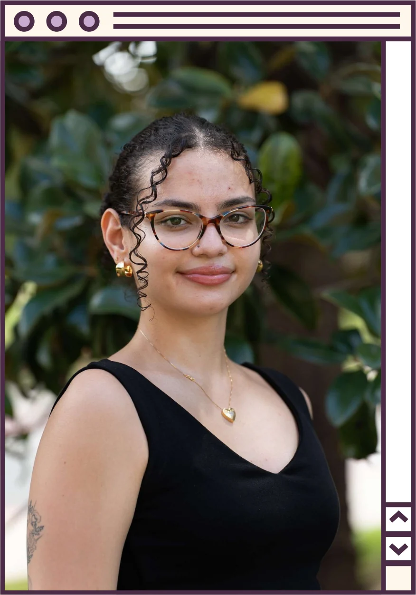

ICT Student
Mariana
Neri Sapori
Welcome! I'm a junior at Florida State University.
At FSU, I'm studying Information, Communication & Technology (ICT) and minoring in Data Analytics and STEM Entrepreneurship. Originally from São Paulo, Brazil, I'm bilingual in Portuguese and Spanish and passionate about bringing a global perspective to tech. I currently serve as an Outreach Intern at FSU Information Technology Services, where I help connect students with campus IT resources and initiatives, and I'm actively involved in leadership roles across the College of Communication & Information as Vice President of Women in IT/ICT Sharing Experiences (WISE) and Secretary of Connecting Girls to STEM (CGS). What excites me most is finding creative ways to make information more accessible and engaging through data, design, and outreach.

Career Objective
“Looking ahead, I hope to grow into a role in data analysis or project management, where I can apply skills like Python, SQL, and data visualization to solve real-world problems and help teams carry projects from plan to finish. Along the way, I want to keep growing as a leader in tech spaces that are still working toward better representation.”
-
Data Analysis
Built a Python + SQL pipeline comparing 117 FSU courses to real job postings
See the project -
Project Management
Coordinated outreach at 6+ campus events and secured space at 3 major ones
-
Leadership in Tech
Vice President of WISE and Secretary of Connecting Girls to STEM